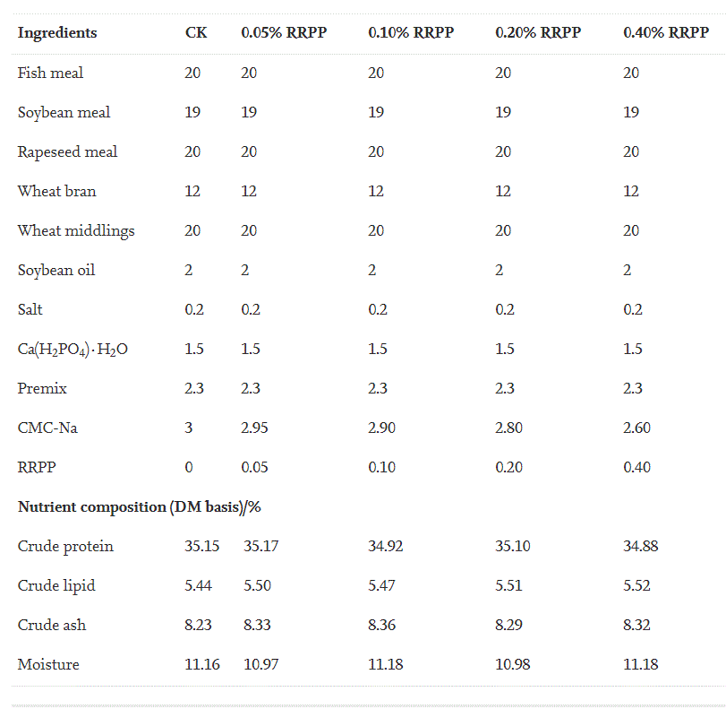

web1-html
Effects of dietary Radix Rehmanniae Preparata polysaccharides on
the growth performance,
immune response and disease resistance of Luciobarbus
capito
2. Materials and methods
2.1. Fish and RRPP
In this study, Luciobarbus capito were obtained from Suqian Institute of Agricultural Sciences, Jiangsu Academy of Agricultural Sciences, China. The fish were acclimatized to laboratory conditions (pH: 6.5–7.5, water temperature: 25 ± 1 °C, dissolved oxygen: 5.5–6.5 mg/L, and nitrites: 0.01–0.02 mg/L) for two weeks prior to the experiment. All fish were fed with a commercial diet three times per day.
RRPP is a commercial product purchased from Yangling Ciyuan biotech Co., Ltd (Xi-an City, China). The polysaccharide content reached 95.18%, and the material was stored at −20 °C.
2.2. Experimental diets
The commercially formulated diet was selected as the basal diet (control, Con). The diets contained approximately 37.9% crude protein, 8.6% lipid and 13.6% ash. The basal diets were supplemented with different RRPP levels (0.05%, 0.1%, 0.2% and 0.4%). All ingredients were mixed thoroughly into a mixture and pelletized with a flat die pellet mill. The pellets were subsequently air-dried and stored in plastic bags at −20 °C. The formulation and composition of all diets are shown in Table 1.
Table 1. Diet formulation and proximate composition of each group (%).

This is a paragraph.
This is another paragraph.
This paragraphs
contains a lot of lines
in the source code,
but the browser
ignores it.
This paragraph
contains a lot of spaces
in the source code,
but the browser
ignores it.
This is heading 1
This is some text.
This is heading 2
This is some other text.
This is
a paragraph
with line breaks.